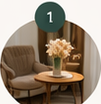
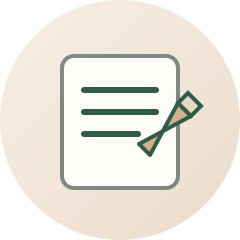
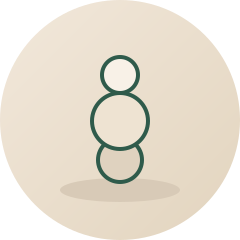
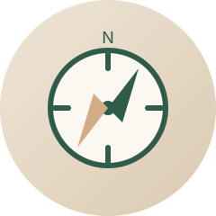

Kas ir koučings?
Koučings ir sarunu partnerība, kuras laikā tu iegūsti jaunu skaidrību, ieraugi iespējas un atrodi sevī resursus, lai pieņemtu labākos lēmumus un virzītos uz priekšu ar lielāku pārliecību.
Profesionāls atbalsts izaugsmei un skaidrībai
Ar vairāk nekā 10 gadu pieredzi cilvēku attīstībā un personāla vadībā palīdzu ieraudzīt virzienu, sakārtot domas un nonākt līdz konkrētiem soļiem.

Koučings ir sarunu partnerība, kuras laikā tu iegūsti jaunu skaidrību, ieraugi iespējas un atrodi sevī resursus, lai pieņemtu labākos lēmumus un virzītos uz priekšu ar lielāku pārliecību.
Atbalsts ceļa izvēlē un virziena noteikšanā
Skaidrība par domām un iekšējiem resursiem
Izaugsme un personīgā attīstība ikdienā
Konkrēti soļi uz priekšu ar lielāku pārliecību

Vienkāršs, drošs un strukturēts process, kurā solis pa solim tu nonāc līdz skaidrībai un rīcībai.

Tu vari būt patiesa un runāt par to, kas tev šobrīd ir svarīgs.

Jautājumi palīdz ieraudzīt jaunas perspektīvas, nevis iedod gatavas atbildes.

Tu pati nonāc pie svarīgākajām atziņām un saproti, kas ir tavs nākamais virziens.

Kopā noformulējam konkrētus soļus, ar kuriem vari sākt jau tūlīt.

Esmu personāla vadības profesionāle ar vairāk nekā 10 gadu pieredzi HR jomā — no atlases un attīstības līdz pārmaiņu vadībai un komandu labbūtībai. Uzskatu, ka kvalitatīvs atbalsts sākas ar cieņu, klausīšanos un spēju ieraudzīt cilvēkā viņa resursus.
Koučingā apvienoju cilvēcisku klātbūtni ar strukturētu domāšanu un praktisku biznesa pieredzi, lai palīdzētu tev atrast skaidrību, pieņemt drosmīgus lēmumus un virzīties uz priekšu sev piemērotā tempā.
Rezervē pirmo konsultāciju vai sazinies, lai saprastu, kurš formāts šobrīd Tev būtu vispiemērotākais.